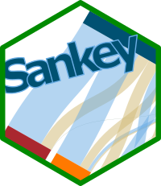
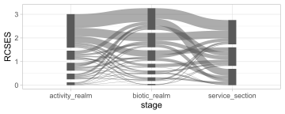

ggsankeyfierGo with the data flow
Overview

The ggsankeyfier packages allows you to visualise your data as Sankey or Alluvial diagrams. A Sankey diagram is essentially a stacked bar plot, where the bands connect bars across stages (on the x-axis), to show how quantities flow between them.
Why use ggsankeyfier?
ggsankeyfier allows you to add Sankey diagram layers to a ggplot2::ggplot(). The package also provides stat_* and position_* functions that allow you to add all sorts of other layers, such as text and labels.
Furthermore, the data model used by the package allows you to visualise flows that skip stages or even feedback loops.
Installation
Get CRAN version
install.packages("ggsankeyfier")Get development version on github
devtools::install_github('pepijn-devries/ggsankeyfier')Important concepts
As there is some variation in the definition and terminology used in Sankey diagrams, there are some introduced here for consistency across the package documentation. Here we try to adhere to common definitions used in the graph theory. This theory is used to model pairwise relationships between ‘nodes’ which are connected by ‘edges’. These aspects are circled in the illustration below.

The ggsankeyfier package can only visualise structured graphs. Meaning that each node belongs to a specific stage (arranged along the x-axis).
Sankey thesaurus
As there are no standards in Sankey diagrams, there may be different words representing the same or similar aspects. Therefore the following thesaurus is presented to provide an overview and hopefully avoid confusion. The list starts with the term preferred in the present package, followed by alternatives.
- Sankey diagram
- Alluvial diagram. Although arguably not the same as a Sankey diagram, they are very similar. Differences ly in the type of data (population of facts across categorical dimensions (alluvial) versus quantities in different states (Sankey)). Also, alluvial diagrams are always structured in stages (where the order does not matter), whereas Sankey diagrams are not necessarily structured, but the order does matter. See also http://www.datasmith.org/2020/05/02/alluvial-plots-vs-sankey-diagrams
- Bump diagram. This is actually a special case of alluvial diagrams, where each node flows only to a single next node. Usually, the stacking order of nodes in each stage is determined by the size of the nodes
- Node
- Vertices. Another commonly used term in the graph theory
- Edge:
- Flow. An acceptable alternative.
- Line. Another commonly used albeit generic term in the graph theory.
- Link. Although commonly used in the graph theory, we avoid its use in this context as it may get confused with a link in a cause-effect chain, which is better reflected by the stages.
- Stage:
- Link. Not used in the present package to avoid confusion with edges (see above).
Usage
Like any other ggplot, you start by calling ggplot2::ggplot2(), provide the data for plotting and specify aesthetics (aes). Layers with Sankey edges and nodes are simply added to the plot using the +-operator:
data("ecosystem_services")
ggplot(ecosystem_services_pivot1,
aes(x = stage, y = RCSES, group = node,
connector = connector, edge_id = edge_id)) +
geom_sankeyedge(v_space = "auto") +
geom_sankeynode(v_space = "auto")
For consistency with aesthetics used in other ggplot2::ggplot() layers, the stage variable should be assigned to x, the quantity of the nodes and edges to y and the node identifier to group. In addition to these ‘standard’ aesthetics, you also need to specify a connector specifying the direction of an edge (one of 'from' or 'to'); and an edge_id which is used to determine which connector ends should be paired together.
Data management
Note that the plotting routines require data organised in a data.frame, with in each row a ‘connector’. A connector is either the start or an end of an edge. This allows you to provide different characteristics for each of these ends. However, in most cases this is not the type of data you will be working with. Check vignette("data_management"), on how to rearrange your data for displaying it in a Sankey diagram.
Positioning nodes and edges
The package gives you much control on the positioning of elements in the diagram. Think of:
- spacing between and sizing of nodes and edges
- aligning nodes vertically
- introducing a horizontal split in nodes
- stacking order of nodes and edges
vignette("positioning") will show you how.
Decorating nodes and edges
When creating your own Sankey diagrams you may want to alter its appearance. You may want to:
- assign meaningful decorations (such as colours) using aesthetics to nodes and edges
- add keys and legends to guide your audience
- add additional layers (such as text)
- change the edge curve shape
- use different themes
Check vignette("decorating") to discover how this is done.
Acknowledgements
This package was development as part of the EU GES4SEAS project (EU call HORIZON-CL6-2021-BIODIV-01-04, grant agreement 101059877) and the WUR Knowledge Base Research program KB-36-003-022 “The use of ecosystem services to conserve biodiversity in the North Sea” that is supported by finance from the Dutch Ministry of Agriculture, Nature and Food Quality
Resources
- Piet GJ, Bentley JW, Jongbloed RH, Grundlehner A, Tamis JE, De Vries P (in prep.) A Cumulative Impact Assessment on the North Sea Capacity to Supply Ecosystem Services DOI:10.2139/ssrn.4450241